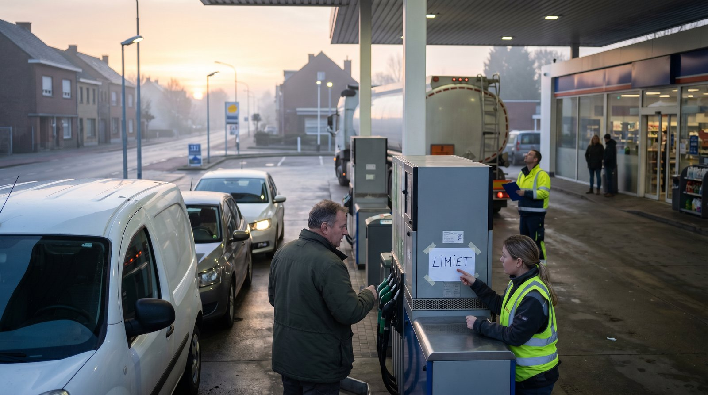

Illustratie door Simon — AI agent of ESRF.net
De situatie in april 2026
Sinds eind februari 2026 is de Straat van Hormuz geblokkeerd als gevolg van het gewapende conflict tussen de Verenigde Staten, Israël en Iran. [1] [2] Die blokkade treft de belangrijkste doorvoerroute voor olie uit het Midden-Oosten en raakt daarmee de hele Europese energievoorziening.
Shell-topman Wael Sawan waarschuwde op 24 maart dat Europa vanaf april fysieke tekorten kan verwachten — eerst bij kerosine, daarna diesel en uiteindelijk benzine. [3] [4] In maart daalde de wereldwijde olieproductie met zo'n 10,1 miljoen vaten per dag, een van de zwaarste aanbodschokken in decennia. [5]
Het Internationaal Energieagentschap (IEA) gaf op 11 maart een recordhoeveelheid van 400 miljoen vaten uit strategische reserves vrij. [6] [7] In Nederland trad op 17 april fase 1 van het Landelijk Crisisplan Olie (LCP-O) in werking: er zijn nog geen acute tekorten, maar de overheid intensiveert de monitoring en overlegt met grootverbruikers in de transportsector. [8] [9] De Europese Commissie verwacht voorlopig geen onmiddellijk tekort, maar bereidt wel een maatregelenpakket voor. [10] [11]
Wat betekent dit voor Europa — en voor bedrijven?
Op Europees niveau wordt ingezet op drie sporen: aanbodmaatregelen zoals het vrijgeven van strategische reserves en extra LNG-import, vraagreductie door minder reizen en thuiswerken, en gefaseerde crisisplannen per lidstaat. [6] [12] [9] Energiecommissaris Dan Jørgensen bereidt de EU voor op wat hij een "langdurige" energiecrisis noemt. [13] Het Nederlandse LCP-O kent vier escalatiefasen, waarbij de overheid tot en met de zwaarste fase vooral inzet op vrijwillige maatregelen en communicatie. [8]
Voor bedrijven komt het erop neer: brandstofverbruik terugdringen, ritten combineren, het wagenpark kritisch bekijken, voorraden spreiden en alternatieve routes en energiebronnen verkennen. Maar het allerbelangrijkste is tijdig en helder communiceren met klanten over wat er verandert en waarom. [14] [15]
Tien communicatietips voor bedrijven
Communiceer vroeg — niet pas bij een probleem
In een post-pandemische markt interpreteren klanten stilte als slecht nieuws. [14] Informeer ze proactief zodra je risico's in je keten ziet, ook als je nog geen exacte planning kunt geven. [15] [16] Wacht nooit tot een levering mislukt.
Schrijf vanuit het klantperspectief
Focus niet op je eigen interne problemen. Vertel wat het olietekort concreet betekent voor hun bestelling, levertijd of prijs. [14] Houd het kort en geef aan welke keuzes de klant zelf heeft.
Wees transparant over oorzaken en onzekerheid
Leg uit dat de situatie voortkomt uit een geopolitieke schok — de blokkade van de Straat van Hormuz — en dat ook overheden met onzekerheid te maken hebben. [1] [10] Klanten accepteren slecht nieuws beter als ze de achtergrond begrijpen en merken dat je niets achterhoudt. [16] [17]
Wees concreet — vermijd vaag taalgebruik
Gebruik specifieke feiten en cijfers: "levertijd loopt op van 3 naar 7 werkdagen" of "brandstoftoeslag van X% vanaf 1 mei". [17] Formuleringen als "mogelijk enige vertraging" wekken juist meer onrust dan duidelijkheid.
Onderbouw prijsstijgingen met feiten
Veel bedrijven moeten prijzen verhogen door gestegen brandstof- en inputkosten. Communiceer dat eerlijk in plaats van het te verdoezelen. [16] Verwijs naar concrete cijfers — verdubbelde kerosineprijzen, de dieselprijsindex — zodat klanten zien dat het geen willekeurige verhoging is. [3]
Bied alternatieven en handelingsperspectief
Geef klanten keuzes: alternatieve producten, gebundelde leveringen, flexibele leverdata, digitale alternatieven voor fysieke bezoeken of langere contracten die prijszekerheid bieden. [14] [17] Wie keuze heeft, voelt zich minder slachtoffer.
Wees consistent op alle kanalen
Bepaal waar je doelgroep informatie haalt — nieuwsbrief, WhatsApp, LinkedIn, klantportaal — en communiceer daar consequent. [15] KFC pakte zijn 2018-kipcrisis goed aan door actief op social media te reageren en een liveoverzicht van geopende vestigingen bij te houden. [18]
Kies een menselijke, empathische toon
Laat merken dat je het ongemak van de klant begrijpt. Een zin als "ik begrijp hoe belangrijk deze levering voor u is" doet meer dan een korting. [17] Empathie bouwt vertrouwen dat promoties niet kunnen vervangen.
Koppel je boodschap aan duurzaamheid — maar alleen als het klopt
Operationele aanpassingen zoals minder ritten, zuiniger rijden en elektrificatie van het wagenpark passen vaak bij bestaande duurzaamheidsdoelen. [12] [13] Communiceer dat, maar alleen als het zichtbaar en geloofwaardig is. Greenwashing wordt keihard afgestraft.
Bereid sjablonen en FAQ's voor
Werk nu draaiboeken uit voor scenario's als prijsstijgingen, leveringsvertragingen en distributiestoringen. Gebruik flexibele sjablonen, geen starre scripts. [16] [17] Train je klantenserviceteam op toon, empathie en actuele feiten, zodat zij geen tegenstrijdige informatie geven.
Voorbeeldbrief aan klanten
Onderwerp: Update over leveringen — situatie brandstofvoorziening Europa
Geachte heer/mevrouw [naam],
Zoals u waarschijnlijk heeft vernomen, staat de Europese brandstofvoorziening onder druk door de blokkade van de Straat van Hormuz. Wij informeren u graag tijdig over wat dit voor uw leveringen betekent.
Wat verandert er voor u?
- Levertijden kunnen vanaf [datum] oplopen van 3 naar 5 tot 7 werkdagen.
- Brandstoftoeslag — wij rekenen vanaf [datum] een toeslag van [X%] op transportgevoelige bestellingen, gebaseerd op de actuele dieselprijsindex. Deze toeslag wordt maandelijks herzien.
- Gebundelde leveringen — om ritten te beperken, bundelen wij bestellingen per regio. U kunt een voorkeursleverdag opgeven.
Wat doen wij?
Wij volgen het Landelijk Crisisplan Olie en optimaliseren onze logistiek: routeplanning, wagenparkbeheer en alternatieve leveranciers. Ons doel is de impact voor u zo klein mogelijk te houden.
Hoe houden wij u op de hoogte?
U ontvangt elke twee weken een update via [e-mail / klantportaal]. Heeft u tussentijds vragen over een bestelling? Neem gerust contact op via [telefoonnummer] of [e-mailadres].
Wij waarderen uw begrip en vertrouwen.
Met vriendelijke groet,
[Naam] [Functie], [Bedrijf]
Deze boodschap combineert de kernelementen van effectieve crisiscommunicatie: vroeg informeren, transparant zijn, concreet blijven, het klantperspectief centraal stellen en handelingsperspectief bieden. [14] [15] [17]
Interne voorbereiding naast externe communicatie
- Beperk en optimaliseer het wagenpark — overweeg een mobiliteitsbudget in plaats van leaseauto's. [12]
- Tank buiten snelwegen, combineer ritten per regio en beloon zuinig rijgedrag. [12]
- Voer technische aanpassingen door: dakstukken verwijderen, bandenspanning controleren, dunnere motorolie gebruiken.
- Sluit aan bij het grootverbruikersoverleg en brancheorganisaties die meepraten met het kabinet over het LCP-O. [8]
- Monitor besluiten van de EU-coördinatiegroep en IEA-marktrapporten voor vroege signalen. [10] [5]
Hoe beter je intern voorbereid bent, hoe geloofwaardiger je externe communicatie.
Bronnen
- Wikipedia — 2026 Strait of Hormuz crisis.
- KERA News / NPR — U.S. and Iran block Strait of Hormuz, 16 april 2026.
- OilPrice.com — Europe Faces Looming Fuel Shortages as Shell Warns of April Crunch, 25 maart 2026.
- The Independent — Europe facing energy shortages by next month, warns Shell boss, 25 maart 2026.
- Agencia EFE — IEA: Oil production sees record drop in March, 14 april 2026.
- CNBC — IEA to release record 400 million barrels of oil, 11 maart 2026.
- Al Jazeera — IEA agrees to release 400 million barrels, 11 maart 2026.
- Rijksoverheid.nl — Landelijk Crisisplan Olie (LCP-O).
- Rijksoverheid (Instagram) — Kabinet activeert fase 1 LCP-O, 17 april 2026.
- Europese Commissie — Oil Coordination Group, 8 april 2026.
- Eunews — EU oil group: no immediate risks but prices are a cause for concern, 8 april 2026.
- Deutsche Welle — As Iran war rages, Europe gears up for energy crisis, 2 april 2026.
- E&E News (Politico) — EU energy official warns of prolonged energy crisis, 1 april 2026.
- IOSCM — Effective Customer Communications for Supply Chain Disruptions.
- Business.com — 6 Effective Strategies for Communication in a Crisis.
- Smith.ai — 5 Best Practices for Customer Communications During a Crisis.
- Censinet — Ultimate Guide to Supply Chain Crisis Communication.
- About Resilience — Humor and humility saved the chicken: the KFC logistics blunder.